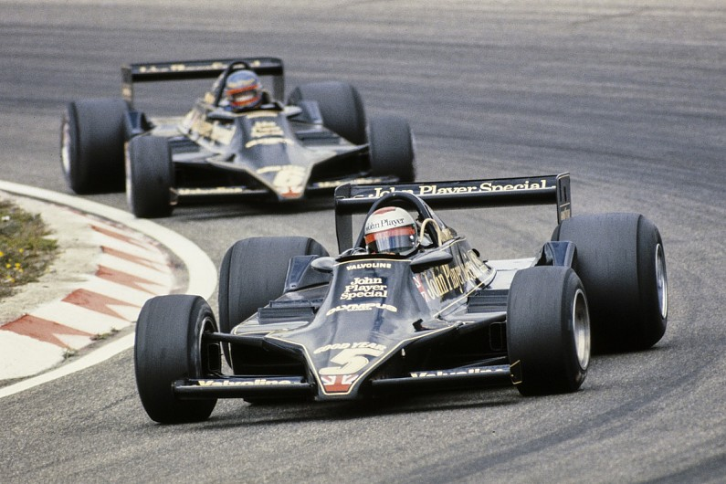

- Lotus 79
- Years: 1970-75
- World championship F1 wins: 20 20
- Designers: Maurice Philippe, Colin Chapman 
Ground-breaking design? Check. Iconic livery? Check. Uncluttered lines? Check. Beautiful engineering? Check. The Lotus 79, which refined the ground-effect concept and dominated the 1978 F1 season, ticks all the boxes for this list. It's also even more impressive close up in the flesh than it is in the famous period images of Mario Andretti and Ronnie Peterson. Lower, neater and sleeker than the Lotus 78 that preceded it, the 79 won on its debut in the Belgian GP in the hands of Andretti and finished 1-2 next time out in Spain. It was only beaten to pole once during the campaign, though the odd reliability issue and jump-start penalty for Andretti at Monza meant it only won six of the 11 championship rounds it started in 1978.